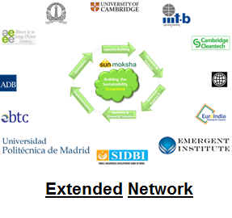

What We Do
- SunMoksha is a creator and provider of sustainable ecosystem in clean technologies.
- We provide consulting and implementation services in clean technologies solutions to corporates, institutions and MSMEs.
- We develop and implement innovative renewable energy solutions for rural customers.
- Our domains on the supply side include renewable energy from solar, bio-energy and waste-to-energy solutions; and on the demand side energy efficiency, smart buildings and smart grid.

Our Team
Ashok K. Das, Ph.D
Ashok has over 22 years of experience in semiconductor equipment and clean technologies.
He provides technology and business solutions, market research & feasibility study, and business advisory services,
as well as implements solutions in the clean technology sectors.
He focuses on solar and bio energy, smart micro-grids, energy efficiency, and rural energy solutions.
More about Ashok on:
http://www.linkedin.com/in/ashokdas
Kuruvilla P Kurian, MBA
Kuru has over 15 years of delivery experience in IT and services.
He shares a strong passion with the rest of the team on the impact right processes can have for
companies that take a the right approach to a sustainable way of operation.
He provides energy efficiency and sustainability solutions for energy conservation and management.
More about Kuruvilla on:
http://www.linkedin.com/in/kuruvillapkurian
S. Muralidharan, C.A.
Murali is a Chartered Accountant with over 30 years of experience in finance, accounting, auditing,
and valuation-cum-due-diligence for fund raising and merger and acquisitions.
He provides consultancy and services for accounting, financial control, auditing, financial due-diligence,
and investment banking.
Srinivas Kadur, Ph.D
Srinivas is a veteran in solar energy technologies, with 30+ years of experience in electronics &
industrial systems, PV technology, renewable energy systems, power electronics, and Nat’l solar policies & projects.
He provides design, manufacturing, implementation, policy, and capacity building for solar PV.
Anand S.P., M.S.
Anand is an expert in smart micro-grid hardware and software with over 15 years of experience in
telecommunications, networking, embedded system, start-ups and clean technologies.
He is responsible for technology development, product design & development, implementation,
and technology market analysis.
Our Advisors
Sangram Mudali
Sangram is a passionate educator with over 25 years of experience in various fields such as CAD/CAM and EDA.
He is a founder director of NIST and APEX, and a keen promoter of research groups at the Institute in the areas
of robotics, embedded systems and bio-informatics.
He is very well connected in the education ecosystem in Odisha and a strong promoter of clean technologies.
Sanjay Sanyal
Sanjoy has over 18 years of experience in finance and entrepreneurship in India,
with a particular focus on the green and education sectors.
He is currently the Director of New Ventures India, a program of the World Resources Institute,
which works at lowering the investment barriers in the green space.
G. Srivatsava
Srivatsava has over 23 years of experience in agriculture & commodity, carbon finance, and training on
business analytics. He brings with him agricultural insights, business models for rural solutions, and financing
solutions.
Our Associates
Bhawani S. Pattnaik
Bhawani Pattnaik has over 12 years of experience in the area of hardware system design,
embedded system and system integration.
He is a professor in Computer Science at National Institute of Science and Technology (NIST)
in and is also heading a team of twenty people at NIST Technology Consulting Services for development
of educational software packages and ERP packages for educational institutions.
He has extensive experience in integration of hardware and software and has executed a
number of such projects at the Institute.
Sauman Dasgupta
Sauman Dasgupta has over 25 years of expertise in green energy, with a passion and drive to work for the betterment of human society. He is the India Director for Australian Wind Energy Institute (AWEI). He specializes in sustainable micro and macro community development, zero-emission scale-ups, business-education Integration, and renewable energy project design and implementation.
More about Sauman on
http://in.linkedin.com/pub/sauman-dasgupta/3/757/b22
Sagar Gubbi
Sagar Gubbi is the Co-founder and Managing Partner of Ecoforge Advisors Pvt Ltd. He has a strong background renewable energy and carbon finance, in addition to strategy consulting in renewable energy sector along with technology and social development. He advises both foreign and Indian investors on equity/debt/carbon investment deals in Indian renewable energy projects. He also advises Indian renewable energy project developers to raise capital from both Indian and foreign sources.
More about Sagar on
http://in.linkedin.com/in/sagargubbi.
A. Vaidyanathan
A. Vaidyanathan is a cleantech entrepreneur with comprehensive hands-on experience in creation & commercialization of innovative HVAC products into the Indian market. He brings strategic insights into creation & commercialization of innovative products in the cleantech space.
More about Vaidyanathan on
http://in.linkedin.com/pub/vaidyanathan-a/2/380/4b5